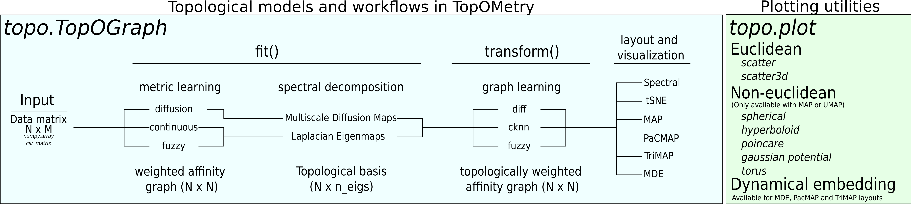

About¶
TopOMetry (Topologically Optimized geoMetry) is a high-level python library to explore data topology. It allows learning topological metrics, dimensionality reduced basis and graphs from data, as well to visualize them with different layout optimization algorithms. The main objective is to achieve approximations of the Laplace-Beltrami Operator, a natural way to describe data geometry and its high-dimensional topology.
For more context on TopOMetry and its usefulness to extract phenotypic topology from single-cell data, see our manuscript.
TopOMetry main class is the TopOGraph object. In a TopOGraph, topological metrics are recovered with diffusion
harmonics, fuzzy simplicial sets or Continuous-k-Nearest-Neighbors, and used to obtain topological basis (multiscale Diffusion Maps and/or
fuzzy or continuous versions of Laplacian Eigenmaps). On top of these basis, new graphs can be learned using k-nearest-neighbors
graphs or with new topological metrics. The learned metrics, basis and graphs are stored as different attributes of the
TopOGraph object. Finally, built-in adaptations of graph layout methods such as t-SNE and UMAP are used to obtain
visualizations to obtain further insight from data. You can also use TopOMetry to add topological information to your favorite workflow
by using its dimensionality reduced bases to compute k-nearest-neighbors instead of PCA, or its topological graphs as
affinity matrices for other algorithms.

TopOMetry was developed by Davi Sidarta-Oliveira.